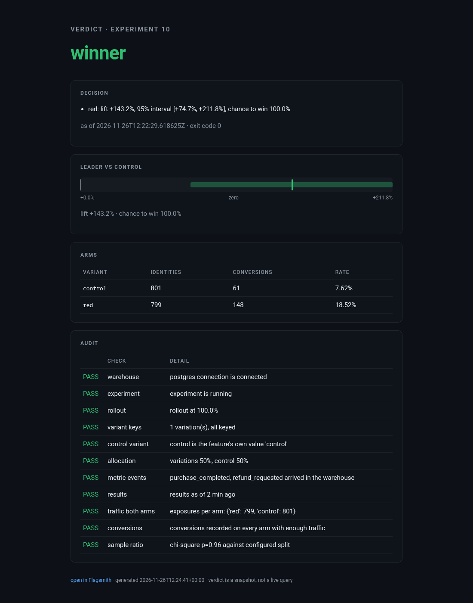
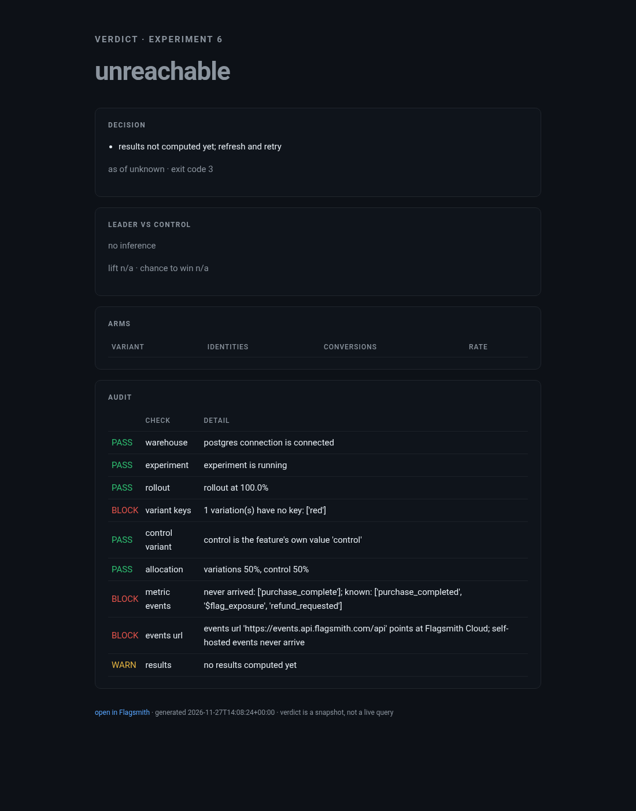

The wiring lies quietly.
A variation with no key records no exposures. An SDK pointed at Flagsmith Cloud sends self-hosted events nowhere. A typo'd event name leaves conversions at zero. The dashboard still looks healthy.
Toggle Wars, Track 03
Verdict reads a Flagsmith experiment's own results, refuses to ship on noise, and records the decision.

verdict report.Flagsmith shows the win probability. On the free self-hosted tier there is no approval workflow, so the release is still a person staring at a screen and hoping.
A variation with no key records no exposures. An SDK pointed at Flagsmith Cloud sends self-hosted events nowhere. A typo'd event name leaves conversions at zero. The dashboard still looks healthy.
An interval crossing zero is not a win. A 99% winner is not safe if refunds went up. The number is evidence, not permission.
Nothing records who shipped what, on which numbers, with which flag mutation. The next incident review starts from screenshots.
One command for each move. Exit codes are the contract: 0 is the only yes.
Per-variant sufficient statistics, lift, credible interval, win probability, exposures and sample ratio.
GET /environments/{env}/experiments/{id}/results/
lift +143.2%
CI [+74.7%, +211.8%]
Not enough data, bad data and losing are different answers. Guardrails are enforced before a winner is allowed.
VERDICT: WINNER (exit 0) VERDICT: GUARDRAIL (exit 2) VERDICT: COLLECTING (exit 1)
Complete the experiment, write the winning variation to 100%, sign the record, keep the ledger.
SHIPPED red: weight 100/0 signed c8295099d84f ledger 1 record, 0 invalid
A two-state gate ships on noise. Verdict separates an empty experiment from a broken one, a loss from an inconclusive result, and a winner from a winner that broke something else.
API, auth, or results not computed yet.
3Sample ratio mismatch, dead arm, or no exposures. The data cannot be trusted.
2Below 50 identities and 5 conversions per arm. There is no result yet.
1The treatment loses. Do not ship.
2The winner regressed a metric it must not move.
2The interval still crosses zero. Verdict prints how much more traffic it needs.
1Interval excludes zero, win probability clears the threshold, guardrails clean.
0Generated by verdict report against the live demo stack. Open any report to see the audit, the arms and the interval.
Red wins on 1,600 shoppers. The interval excludes zero and every guardrail is clean.
+143.2% lift / CI [+74.7%, +211.8%] / 100% win probability

The primary metric wins by 181.4%. Refunds move the wrong way, so the release is blocked.
refunds [+98.4%, +524.2%] / exit 2

A keyless variation, a missing event and a Cloud events URL produce three blocks before traffic.
3 block / 1 warn / 5 pass
Demo shoppers are scripted by demo/load.py. Reports are generated from demo runs; the video records one of them. The experiments, exposures, conversions, statistics and flag mutations are real self-hosted Flagsmith.
The walkthrough runs the wiring audit, refuses a guardrail regression, gates the winner, ships it, and shows the Flagsmith side at 100%.
The refusal is the product. A gate that only says yes is a dashboard with extra steps.
Verdict is the release control for an experiment. The flags, the statistics and the mutation all live in Flagsmith.
The experiment's own sufficient statistics are the decision input. Verdict does not model a second source of truth.
GET /environments/{env}/experiments/{id}/results/
Warehouse event names, feature variations and keys, rollout allocations, metric definitions, and the results snapshot.
GET /environments/{env}/warehouse-connections/{id}/events/
Ship completes the experiment and writes the winning variation to 100%. The record names the exact state and value.
POST /environments/{env}/experiments/{id}/complete/
One command brings up self-hosted Flagsmith, two live experiments, a sample shop and a deliberately broken fixture.
Requirements: Docker Compose and Python 3.11+. The first run pulls the Flagsmith image and builds the shop.
If port 8080 is taken, run DEMO_PORT=8088 make demo. Flagsmith stays on 8000.
The same gate runs as a composite GitHub Action: uses: LangerSword/verdict/action@v1.
git clone https://github.com/LangerSword/verdict cd verdict make demo
verdict --config demo/verdict.toml gate verdict --config demo/verdict.toml ship --confirm --sign verdict verify demo/decision.json verdict ledger verify demo/ledger.jsonl
The gap is bigger than a CI check. The roadmap is the path from a pre-release gate to an open decision layer for releases.
Seven states, signed decision records, an append-only ledger and offline verification.
shippedWatch guardrails after the flag flips. Pause or roll back with approval, and record the guard decision.
nextFreeze windows, guardrail bands, sample floors and approver rules, evaluated locally and in CI.
plannedThe same decision engine beyond Flagsmith, plus a deterministic interface for coding agents.
planned